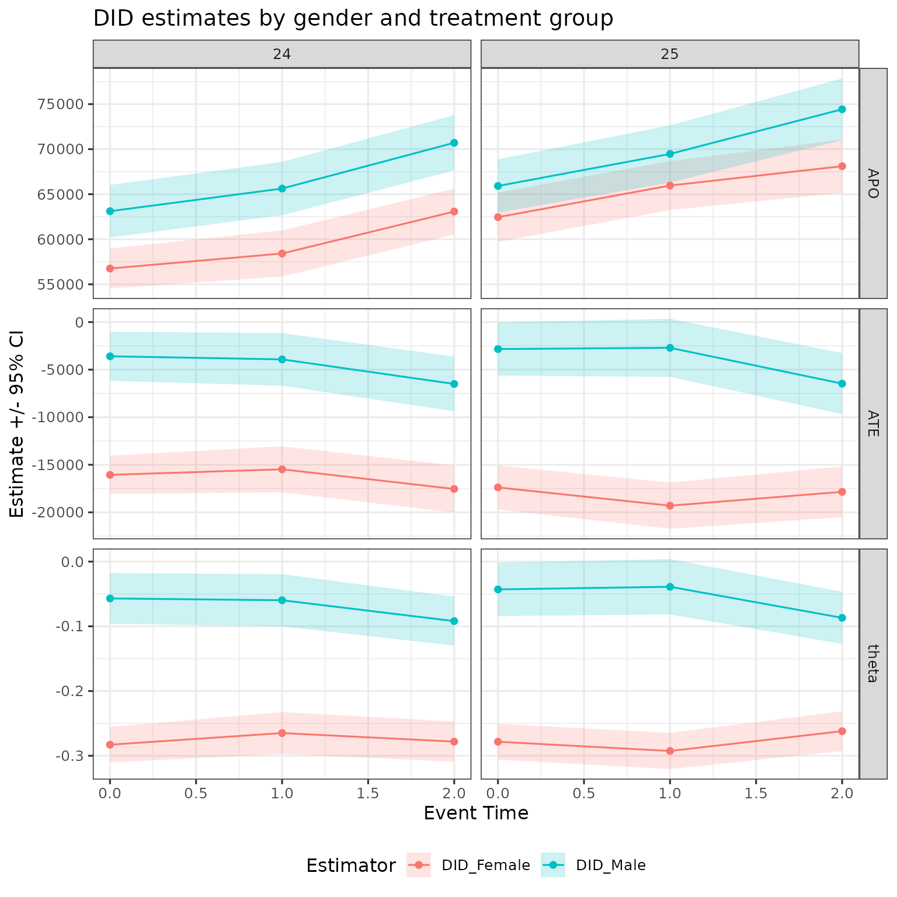
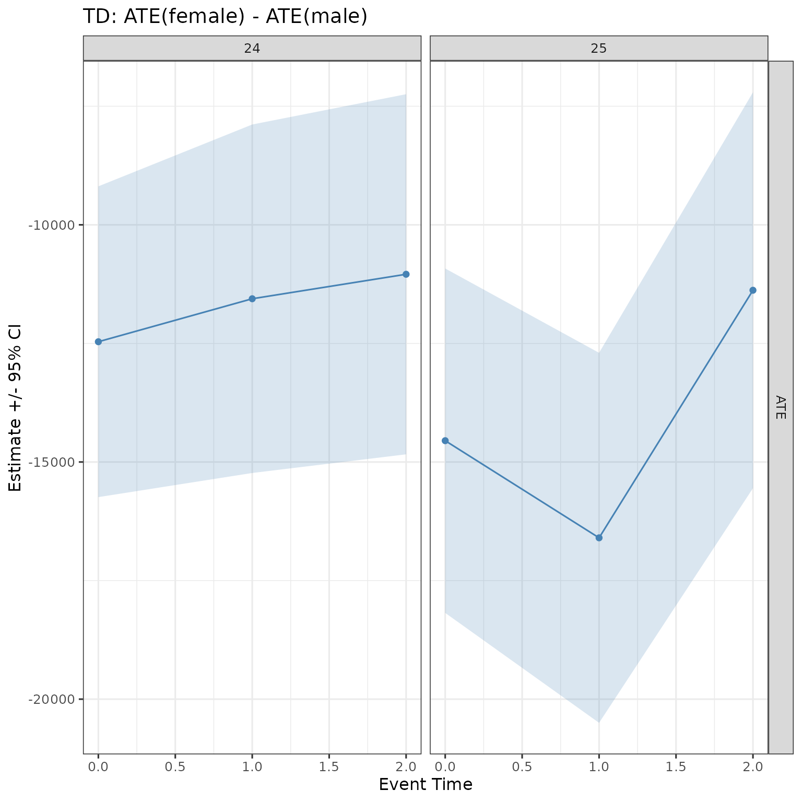
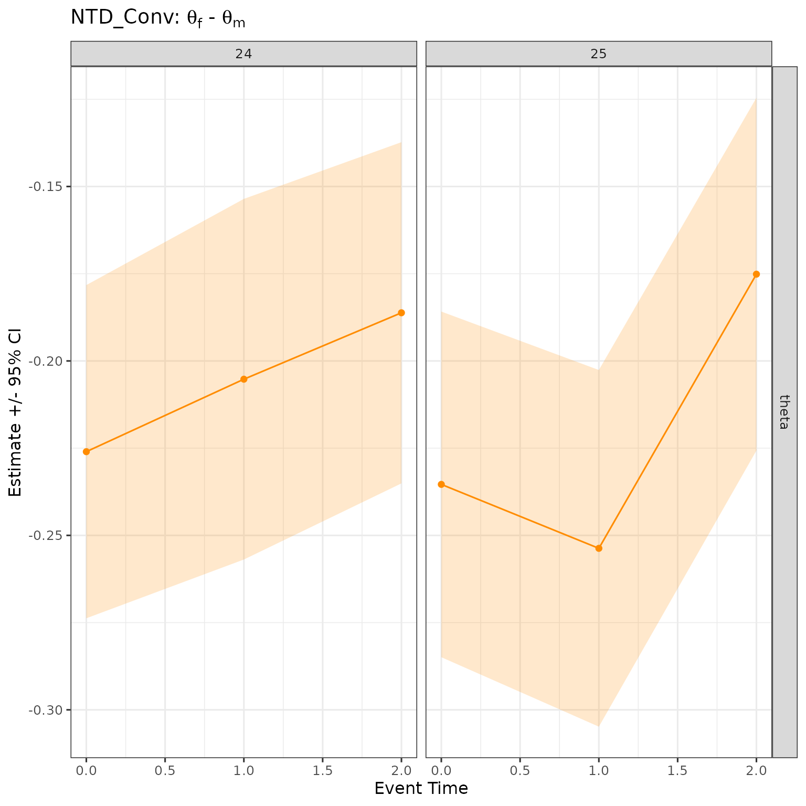

Notation. For symbol definitions, see the notation vignette.
Overview
childpen provides five estimators for the child penalty
in earnings: DID_Female, DID_Male,
TD, NTD_Conv, and
NTD_New. All five are computed jointly by a single call
to multiple_treatment_group_analysis(), which returns one
row per treatment group
event time
estimand
method combination.
The estimators differ in what they target:
- DID_Female / DID_Male — gender-specific average treatment effects, using the closest not-yet-treated group as a control.
- TD — the gender gap in treatment effects (levels), i.e. ATE(female) − ATE(male).
- NTD_Conv — the conventional child penalty: the gender gap in normalised effects, .
- NTD_New — the effect of parenthood on the gender earnings ratio , denoted .
Simulate data and run estimation
library(childpen)
data <- simulate_data(n_individuals = 2000, treatment_groups = 24:28)
head(data)
#> id female age D Y
#> 1 1 1 20 24 40644
#> 2 1 1 21 24 36525
#> 3 1 1 22 24 39328
#> 4 1 1 23 24 34391
#> 5 1 1 24 24 46404
#> 6 1 1 25 24 46885
res <- multiple_treatment_group_analysis(
data = data,
treatment_groups = 24:25,
periods_post = 2,
periods_pre = NULL,
verbose = FALSE
)The data contain individuals with first birth ages ranging from 24 to 28. We analyse the two earliest groups (d = 24 and d = 25) over two post-birth periods. Groups with d ∈ {26, 27, 28} serve as not-yet-treated controls: for d = 24 at event time 2 (age 26) the control is d′ = 27; for d = 25 at event time 2 (age 27) the control is d′ = 28.
DID
DID estimates gender-specific effects using the closest not-yet-treated control group. For treatment group and target age , the control group is . The DID counterfactual potential outcome is
and the DID ATE and normalised effect are
When to use DID_Female / DID_Male: use these when you want gender-specific effect trajectories — for example, to plot the event-study path for women and men separately before computing any gap measure.
res |>
filter(method %in% c("DID_Female", "DID_Male"),
d %in% 24:25,
event_time %in% 0:2) |>
ggplot(aes(x = event_time, y = est, ymin = ci_l, ymax = ci_h,
color = method, fill = method)) +
geom_ribbon(color = NA, alpha = 0.2) +
geom_point() + geom_line() +
facet_grid(cols = vars(d), rows = vars(estimand), scales = "free") +
labs(x = "Event Time", y = "Estimate +/- 95% CI",
color = "Estimator", fill = "Estimator",
title = "DID estimates by gender and treatment group") +
theme(legend.position = "bottom")
TD
TD estimates the gender gap in treatment effects in levels:
When to use TD: use TD when your research question is about the absolute earnings gap attributable to parenthood — for example, how many currency units more does parenthood reduce female earnings than male earnings.
res |>
filter(method == "TD",
d %in% 24:25,
event_time %in% 0:2) |>
ggplot(aes(x = event_time, y = est, ymin = ci_l, ymax = ci_h)) +
geom_ribbon(color = NA, alpha = 0.2, fill = "steelblue") +
geom_point(color = "steelblue") + geom_line(color = "steelblue") +
facet_grid(cols = vars(d), rows = vars(estimand), scales = "free") +
labs(x = "Event Time", y = "Estimate +/- 95% CI",
title = "TD: ATE(female) - ATE(male)") +
theme(legend.position = "bottom")
NTD
NTD produces two estimands that measure the gender gap in normalised terms.
NTD_Conv is the gap in normalised effects — the conventional child penalty:
NTD_New measures the effect of parenthood on the gender earnings ratio :
When to use NTD_Conv vs NTD_New: NTD_Conv normalises each gender’s ATE by its own pre-birth earnings level, so it is comparable across groups with different baseline earnings. NTD_New instead asks how much the ratio of female-to-male earnings changes because of parenthood, making it directly interpretable as a change in the gender earnings ratio.
NTD_Conv
res |>
filter(method == "NTD_Conv",
d %in% 24:25,
event_time %in% 0:2) |>
ggplot(aes(x = event_time, y = est, ymin = ci_l, ymax = ci_h)) +
geom_ribbon(color = NA, alpha = 0.2, fill = "darkorange") +
geom_point(color = "darkorange") + geom_line(color = "darkorange") +
facet_grid(cols = vars(d), rows = vars(estimand), scales = "free") +
labs(x = "Event Time", y = "Estimate +/- 95% CI",
title = expression(paste("NTD_Conv: ", theta[f], " - ", theta[m]))) +
theme(legend.position = "bottom")
NTD_New
res |>
filter(method == "NTD_New",
d %in% 24:25,
event_time %in% 0:2) |>
ggplot(aes(x = event_time, y = est, ymin = ci_l, ymax = ci_h)) +
geom_ribbon(color = NA, alpha = 0.2, fill = "darkgreen") +
geom_point(color = "darkgreen") + geom_line(color = "darkgreen") +
facet_grid(cols = vars(d), rows = vars(estimand), scales = "free") +
labs(x = "Event Time", y = "Estimate +/- 95% CI",
title = expression(paste("NTD_New: ", Delta, rho,
" (effect on gender earnings ratio)"))) +
theme(legend.position = "bottom")
Validation tests
For a discussion of pre-trends tests and other validation checks appropriate for this estimator family, see the validation tests vignette.